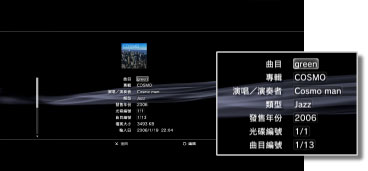

音樂 > 取得／編輯音樂CD的相關資訊
取得／編輯音樂CD的相關資訊
取得音樂CD的相關資訊
插入音樂CD後，會自動與網路連線並取得CD的相關資訊。若想取得，需於首次連線時，同意畫面上顯示的使用承諾條款。
提示
- 選擇選項選單亦可取得CD的相關情報。選擇音樂CD按下
 按鈕後，開啟選項選單並選擇［取得CD資訊］。請遵循畫面指示，正確操作。
按鈕後，開啟選項選單並選擇［取得CD資訊］。請遵循畫面指示，正確操作。 - 若未取得CD的相關情報，即使插入音樂CD亦無法顯示專輯名稱與樂曲名稱。
編輯音樂CD的相關資訊
能部分變更已取得之CD資訊。選擇音樂或樂曲的圖示後按下按鈕，開啟選項選單並選擇［資訊］。請選擇想變更的項目。

提示
- 經由PS3™自動取得之CD資訊若有誤，亦可將修正後的資訊經由網路傳送至All Media Guide公司。選擇音樂CD的圖示後按下按鈕，開啟選項選單並選擇［傳送CD資訊］。
- All Media Guide公司是提供CD資訊資料庫的公司。
- 傳送資訊前，若不輸入［相簿］、［演奏者］、［類型］即無法傳送。
- Super Audio CD無法變更或傳送CD資訊。
重要
Super Audio CD無法於部分PS3™上播放。詳細請參閱［關於可播放的光碟種類］。